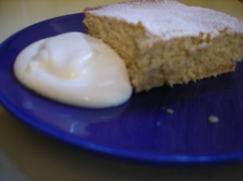

Nick Malgieri's Best and Easiest Banana Cake
As opposed to some of his more difficult banana cakes, I suppose…
We suffer from feast or famine in the banana department in our house—we are either out of them or have too many getting too ripe all at once. Poppy likes one every morning for breakfast, but it has to be just right, not too green and not too ripe, and Calvin and I don’t like them at all. In fact, I absolutely loathe them and everything about them—their taste, their smell, and the way they spoil everything they are an ingredient in by promiscuously depositing their slime all over what they come in contact with. For instance, if someone unwisely adds bananas to a fruit salad, the salad is completely tainted with banana flavors; unlike, say, blueberries which you can pick out if you don’t like them and happily eat the rest of the fruit. The same with a trifle—if it is made with bananas there is no way I can eat around the bananas and enjoy the custard and ladyfingers; everything tastes of bananas.
And another thing about baked goods made with bananas—you automatically know you’re having half-rotten fruit fobbed off on you. No one wakes up in the morning and says, ‘It’s a lovely day to make banana bread!’ No, they wake up and go down to their kitchen, like I did today and say, ‘Jeez, look at all those speckled bananas; I’m damned if I’m throwing them out at those prices! What can I bake?!’
Hence this banana cake from How to Bake, by Nick Malgieri:

- 12 tablespoons softened butter
- 1/2 cup brown sugar, packed
- 1/2 cup granulated sugar
- 3 large eggs
- 1 teaspoon vanilla
- 1/2 teaspoon baking soda
- 1 teaspoon baking powder
- 2 1/2 cups cake flour
- 1 cup mashed, not pureed bananas (2 large)
- 3/4 cup milk or buttermilk (I used buttermilk)
Preheat oven to 350º. Grease 9×13 inch cake pan, line with parchment paper if you plan to remove cake and grease paper.
Using hand mixer set at medium or KitchenAid fitted with paddle, beat butter until light; gradually beat in sugars and continue beating until very light. Beat in eggs one at a time, beating smooth after each addition, scraping bowl occasionally. Beat in vanilla. In another bowl, stir the baking powder and soda into the cake flour and add to mixer bowl. Stir in the bananas and milk to mix. Beat on low speed for 2 minutes, scraping the bowl and beaters several times.
Scrape into the prepared pan and bake for about 35 minutes, or until cake is well-risen and toothpick inserted into center comes out clean. If removing cake from pan, cool on rack for 10 minutes before covering with another cooling rack and inverting. Turn right side up to finish cooling. Serve cake with lightly sweetened whipped cream.
Mr. Malgieri stresses that the bananas must be mashed and not pureed for the best flavor, which made me a little nervous after reading The Wednesday Chef’s experiences with banana cake recently, but judging from the satisfaction around my dinner table, all seemed to turn out well. I, of course, didn’t eat any.
Comments
You’re so right about the beginning of every banana bread. While I don’t care to eat overripe bananas (or even very ripe bananas) straight, I love banana bread.
This looks delicious.
Do you have a favorite banana bread recipe? I have been using the one from Mark Bittman’s How to Cook Everything and folks seem to enjoy it but I’m always open to suggestion. (And I still have 3 big, fat speckled bananas in the kitchen!) Actually, I’m about to freeze them, but still…
I have the best banana bread recipe: last year I worked my way through about 10 or 15 recipes, determined to find the best one, and I did! It’s from Beth Hensperger and is perfect. The only stipulation I have is to let your bananas get really, REALLY ripe – totally and utterly speckled with black. It makes a huge difference in the texture and flavor of the bread. Also, don’t leave out the toasting of the walnuts.
Banana Nut Bread
MAKES ONE 9-BY-5-INCH LOAF
3/4 cup coarsely chopped walnuts (3 ounces)
1 1/4 cups unbleached all-purpose flour
1 teaspoon baking soda
1/2 teaspoon cinnamon
1/2 teaspoon salt
1 cup sugar
2 large eggs
1/2 cup canola oil
3 medium overripe bananas, mashed (1 1/4 cups)
1 teaspoon pure vanilla extract
1. Preheat the oven to 350°. Coat a 9-by-5-inch loaf pan with cooking spray. Spread the walnuts in a pie pan and toast in the oven for 5 to 8 minutes, or until fragrant; let cool.
2. In a medium bowl, whisk the flour with the baking soda, cinnamon and salt. In another bowl, combine the sugar, eggs and oil and beat at high speed until light-colored and creamy. Add the mashed bananas and vanilla and beat until smooth. Stir in the dry ingredients until thoroughly blended.
3. Fold in the nuts.
4. Pour the batter into the prepared pan and bake in the middle of the oven for 50 to 60 minutes, or until the top is springy and a cake tester inserted in the center comes out clean. Let the loaf cool in the pan for 10 minutes before turning it out onto a rack to cool completely.
MAKE AHEAD Wrap the bread tightly in plastic and refrigerate for up to 5 days or freeze for up to 2 months.
Hey, thanks Luisa—I think I’ll make some today because I think the bananas are ready, they’re really brown and speckled and I have to take refreshments to church on Sunday; your recipe sounds like it keeps well.
Have you ever used Watkins vanilla? I started buying it when I worked in a kitchen store a few years ago and I like it better than Neilson-Massey and some of the other popular gourmet brands.
I haven’t made banana bread for years —I think because we don’t tend to end up with overripe bananas. For me it’s just as you said, I don’t wake up and think, I really need to make banana bread. The urge only hits when I have really brown bananas on my hand.
But all of a sudden I’m feeling inspired. I might buy a few extra bananas this week just to let them get overripe and banana bread ready.
One of my favorite cakes in the whole world is a banana cake with cream cheese frosting. I even added some rotten (excuse me-overripe!) bananas to those delicious “Peanut Butter Cake Squares”. You know that recipe we both make Becky? They were a fine addition!
Your recipe looks yummy and I intend to try it!
I hope you liked it! I haven’t heard of Watkins vanilla, wonder if I could find it here in NYC…
Luisa, you can get Watkins vanilla online, but I’m sure there are some shops in NY that carry it. We used to sell it in the (now closed) small kitchenwares store I worked at here in Pittsburgh, and, oddly, it is for sale at the History Museum gift shop, also in Pittsburgh, which doesn’t help you, but are just two examples.
Sue, I can’t imagine ruining that wonderful peanut butter/chocolate chip cake by putting rotten bananas in it, but I guess it would give you a nutter-butter sort of thing.
It tasted wonderful. Reminds me of a smoothie they sell at “Planet Smoothie” called PBJ smoothie. It has peanut butter, bananna, strawberry and God knows what else but it tastes like a peanut butter & jelly sandwich on wheat bread! Yummy!
It seems odd to leave my thoughts on The Wednesday Chef’s recipe for Beth Hensperger’s banana bread here at this post, which is ostensibly about Nick Malgieri’s banana cake and which appears on a blog in which one of authors doesn’t care for bananas, but . . .
I just made the recipe Luisa left here on April 20, 2006 twice and it’s right on. I like a banana bread made with oil and this one has a delightful texture. I didn’t love the basic cinnamon flavor, so the second time around I tried the Moosewood trick Rebecca mentions – 1/2 c coffee for Hensperger’s amount of bananas – and it makes the banana flavor much more complicated.
For what it’s worth!!
Add a comment